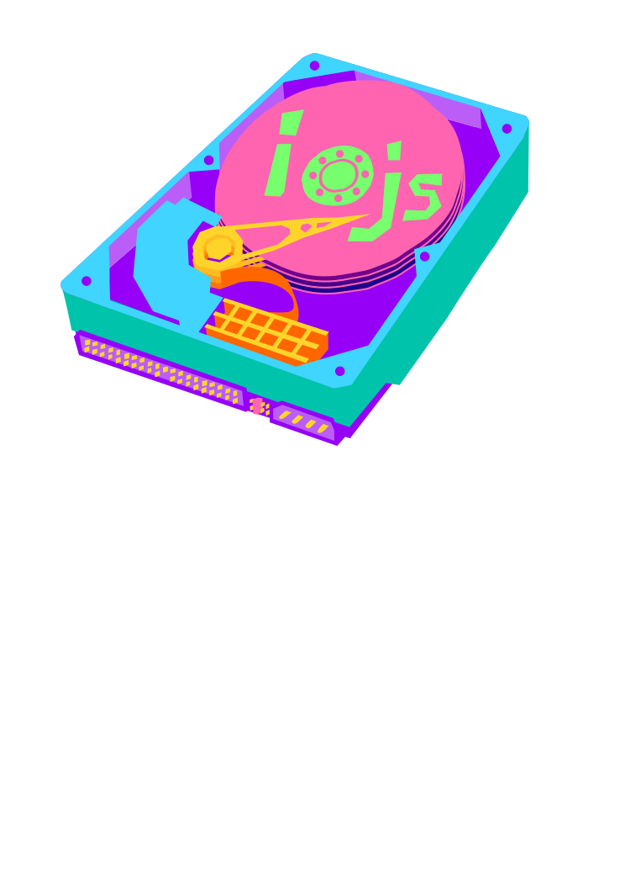

Modulhaus
Open Source + Full Stack Web Development
Modulhaus is open for business, and accepting contract proposals for web developments. Give us your input!
If you know what you want, input your application requirements, and we will respond. To learn more about us, read on, or skip ahead to the what?, who?, why? or how? sections.

What?
Modulhaus offers affordable web development for any project. Our specialties are interactive websites, networks, tools, and interfaces, but we are known to hack anything from hardware to creative multimedia experiences.
 We use a vast library of modular, open soure code to liberate the design of applications from stiff frameworks, unnecessary management, and expensive, proprietary molds. Our modular development style is the ultimate in efficiency. The benefit is yours.
We use a vast library of modular, open soure code to liberate the design of applications from stiff frameworks, unnecessary management, and expensive, proprietary molds. Our modular development style is the ultimate in efficiency. The benefit is yours.
We offer development on any level, from the full stack down to the individual module.
Who?
Friends, former housemates and current HAUSmates, James and Johnny are a left and right brain that met in the middle. Creative, technical, and inspired, they advance art and mad science from opposite approaches. Modulhaus is a product of their plotting.
James Halliday
James is well known as a prolific author of open source applications, and international ambassador for all programs modular, open source, and javascript. He is an inspiration to his peers and proteges.
James is a true adherent to the Unix Philosophy, and a master of full stack development. With hundreds of modules and repositories, his efforts in open source module writing and collaboration set the standard. His modules and open source projects are used by hundreds of companies large and small, and are downloaded millions of times every week.
Johnny Honestly
Johnny Honestly broke into programming through the window. The browser window. Literally learned CSS first. Johnny is an artist with a deep love for science and exploration. He could not help becoming enmeshed in data, networks, interfaces, and all else.
It was epiphanies about the future of the web that inspired Johnny to learn to program. He got a late start, but he has put it all in, because he sensed the magic. Today, his wizardry is on point.
How?
 Open source software development offers a bounty of benefits. Code reuse saves time, ergo money, and makes programmers happy. A world of developers continually fix and improve shared code. For any given application, the majority of its functionality has already been written for you. It is on top of this massive, freely available resource that new, innovative applications can be built.
Open source software development offers a bounty of benefits. Code reuse saves time, ergo money, and makes programmers happy. A world of developers continually fix and improve shared code. For any given application, the majority of its functionality has already been written for you. It is on top of this massive, freely available resource that new, innovative applications can be built.
We have replaced repetition and menial problem solving tasks, with continuing education and personal growth. The difficulty and expense of maintaining a stable of programmers, each with niche qualifications, has been replaced by a distributed, modular, and endlessly scalable laborforce. Now at your fingertips.
We are your entry into this paradigm. All you need to know is what you want from an application. No longer does your company, organization or project need to hire and keep developers and managers. Instead, the right programmer for every piece of your application can be sourced indpendently.
Modulhaus represents a global network of these independent, collaborative, code writers. These are people who read and research open source code endlessly. They contribute code back to the stacks. Collectively, our diversity covers the entire domain of web development.
James and Johnny are system architects, developers, and a nexus to this ecosystem. It is their intention to Modulhaus into a decentralized system for sourcing and fulfilling contract development. To that end, we are developing tools to manage this new workflow.
If you are an OSS developer in the modular style, and want to know more, contact James or Johnny directly via IRC or other channels. This is for you!
If you are only interested in getting applications built, send us a work proposal today!
Why?
Modulhaus was concieved by @substack and @johnnyscript as a means for independent, open source hackers to support their practice. And to what end? The end of contracting, recruitment, HR, and other annoying and wasteful practices!
We believe the benefit will be mutual for coders and clients.
Input
Tell us what you need from an application, modules, CLI tool, dev ops solution, or anything else. We’ll find the right people to write the right parts, and put it all together.
Please don’t forget to include some from of contact, and double check your spelling. Note that there is a 220 character limit. You should be able to describe what you need in that space.